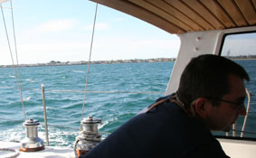
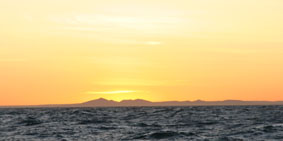
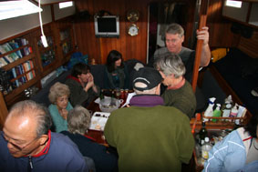
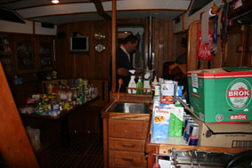
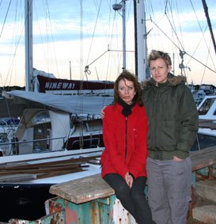

|
|
|
|
|
From Melbourne to Queenscliff
25th May 2007 - written by Peter
Hi All,
Finally got away on Friday, albeit later than hoped. It was
lovely - all the staff at the club were out on the balcony
waving us off (or checking we had actually gone?). 
Well, at least once we'd stopped.
We discovered coming in that Hinewai fully loaded (we're carrying about 2 tones extra weight) doesn't like stopping - it was fairly impressive as people leapt out the way as we bounced our way down the dock. Fortunately no damage (well, not to us).
Leaving was fun as well, with an extra 1/2 ton of fuel aboard and the wind blowing us onto the dock, it took a couple of attempts to get out - but we did eventually.
What a feeling - at last we were finally truly on our way.
The weather has been foul recently, two weeks of strong
northerlies and it's made it hard for us to check out the
sails as well as we would have liked. Allied to this was
the advice from our engine guy to give the engine a good
workout so we decided to motor down the bay. It took about
five hours and we discovered that the tops of our 
It was well dark by the time we got down to West Channel and slowly followed the line of lights to Queenscliff (well, those that were working - most nav marks are now powered by solar panels which get covered in Shag shit and stop charging the batteries).
We finally pulled into The Cut in Queenscliff about 8.30, both totally exhausted  (Not from the trip down, but from the efforts of the last six months that are finally over).
The last week had been frantic - starting with the final, final leaving party last weekend and a week of packing everything away. 
So Saturday saw us do nothing - just sit and read - a real recharge day.
On Sunday morning, we checked over everything and discovered it was as well we hadn't tried to unfurl the headsail since there was a horrible tangle at the top. If we'd got it out, I doubt we have got it back in so just as well we motored. Sitting in The Cut though we were soon able to sort it out.
Then the wind and rain came in so we settled, warm as toast, down below as we took half the boat apart again to get to the top of the diesel tanks where we found the gaskets that should seal the inspection hatches were the source of the leaks. Someone who was working on their boat nearby is kindly getting some gasket material for us today from Geelong (there's nowhere we can get it in Queenscliff) and we'll make and fit the new gaskets tomorrow.
 Today we using as a general clean up day and we'll be sitting down to do some chart work in a little while - planning the next few days course. Unfortunately, the weather is closing in again and it's looking unlikely the next weather window will come through before Thursday, but Bass Straight has a well deserved nasty reputation and we do not have any desire to be hammered so we'll sit here until the weather is right.
Still can't believe that after 10 years in the planning, we have finally headed off - albeit only 30 miles so far. It was grand to talk with you last week (Thank you for your lovely message Kim).
So that's the news so far - we'll keep in touch
All the best
P & J
Next Log Page: From Queenscliff to Sydney
|
|
|
|
|
|
|
The Crew The Route The Yacht The Log Guestbook Links Contact Us |
|
|
|
|
|
Home |
|
|
All Original Content of this Web Site Copyright © 2000, 2001, 2002, 2003, 2004, 2005, 2006, 2007 2008, 2009 Ocean Odyssey Pty Ltd |